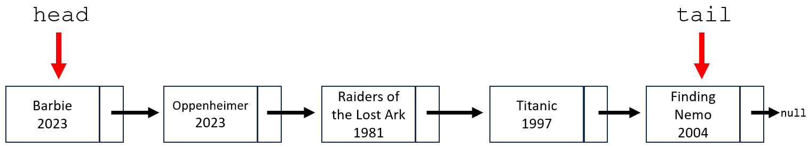

Lab 5: Linked Lists
Due Date and Submission Requirements
- Due Date: Tuesday, February 20th at 11:59 p.m.
- Partner Information: This is an individual assignment. You are allowed to collaborate with other students, but each student must submit their individual, independent solution.
- Submission Instructions: Upload your solutions (.java file), entitled Node.java, and SinglyLinkedList.java to the BrightSpace(D2L) Lab 5 Dropbox.
The goal of this lab is:
- Gain experience using Linked Lists
- Write methods that manipulate data inside a LinkedList
Directions
You will be writing a LinkedList that holds information about movies and their release date.
First, define the Node class. Each Node (movie) will have a title, and a release date. Remember that each Node must also keep track of the node that comes next.
Then, download Lab5Demo.java, and supply the missing functions inside the SinglyLinkedList class.
In class, we wrote a singly linked list that kept track of the head node (the first node in the linked list). In this assignment, your linked list will need to keep track of the head node, and the tail node (the last node in the linked list)
Here is an image of how the linked list looks.

In the SinglyLinkedList class, you must write the following methods
- addToFront(Node newMovie) - This method adds a new node to the beginning of the LinkedList. Remember that you have to keep track of the tail too.
- addToBack(Node newMovie)- This method adds a new node to the end of the LinkedList. Remember that you have to keep track of the tail too.
- removeFirst()- This method removes the first element in a LinkedList.
- insert(Node newMovie, int N)- This method inserts a new node at the Nth spot of the LinkedList. For example, if insert(newnode, 2) is called, the newnode should become the 2nd element in the Linked List. You can assume the user will provide a valid and existing insertion spot. This method will only insert something in the middle of the Linked List (ie. this method will never be called to insert at the end, or the very start of the linked list).
- searchForMovie(String m)- This method searches through the Linked List for a certain movie title (m). If found, the method will print out the location in the Linked List (spot 1, spot 2, etc) of the movie. If the movie is not found, your program should print out "Movie: [movie_name] was not found"
- getSize()- This method returns how many elements are currently in the Linked List
- printList()- This method prints all the movies from the Linked List. (see sample output)
Rules
You are NOT allowed to import java.util.LinkedList;
Starting Code
Hints
- You should be able to use some of the code from Friday's (2/16) lecture
- The insert() method is probably the trickiest. Try to do a loop so that current lands on the node before the insertion spot. That is, if the user is trying to insert at spot 3, try to get current to point to the 2nd node.
Required Output
When your program is run, your output should look exactlythe same as seen in this screenshot .
Grading (10 points)
- The head and tail pointers are correctly maintained in your SinglyLinkedList class
- 1 points - addToBack() method correctly adds a node to back of linked list
- 1 points - addToFront() method correctly adds a node to back of linked list
- 1 point - removeFirst() method correctly removes the first node of linked list
- 2 points - insert() method correctly inserts something at spot N in the linked list
- 2 points - searchForMovie() method can find an existing movie, and prints out the correct message when a movie is not found
- 1 point - getSize() correctly returns the number of nodes in the linked list
- 1 point - printList() correctly prints the nodes and their information
Deductions
-10 points if you dont use a Linked List
{kind=link}